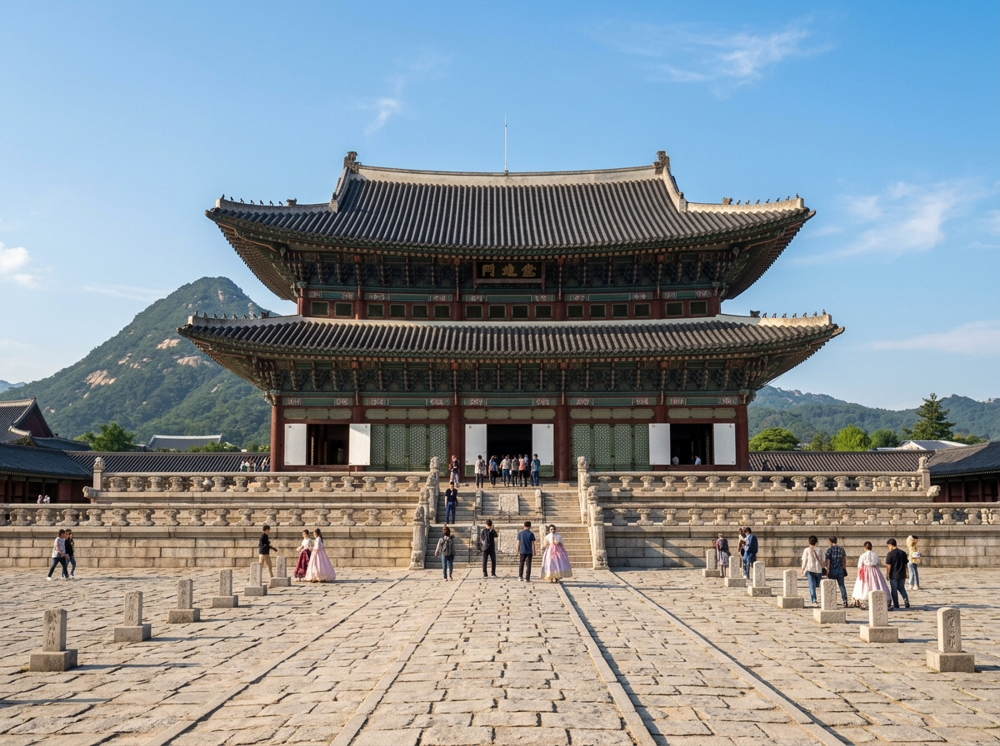
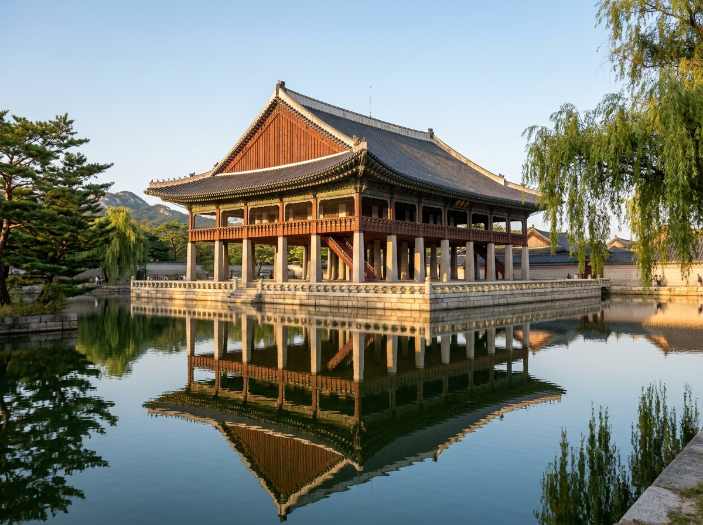

조선의 법궁, 경복궁
600년 역사가 숨 쉬는 서울의 대표 궁궐을 만나보세요
태조 4년(1395)에 창건된 조선 왕조의 으뜸 궁궐, 경복궁의 역사와 주요 전각, 영상과 음악, 사계절 풍경을 한눈에 둘러보실 수 있습니다.
관람 안내
서울특별시 종로구 사직로 161 · 매주 화요일 휴궁. 계절별 관람 시간과 야간 특별 관람 일정은 방문 전 경복궁 공식 안내를 확인해 주세요.
600년 역사가 숨 쉬는 서울의 대표 궁궐을 만나보세요
태조 4년(1395)에 창건된 조선 왕조의 으뜸 궁궐, 경복궁의 역사와 주요 전각, 영상과 음악, 사계절 풍경을 한눈에 둘러보실 수 있습니다.
서울특별시 종로구 사직로 161 · 매주 화요일 휴궁. 계절별 관람 시간과 야간 특별 관람 일정은 방문 전 경복궁 공식 안내를 확인해 주세요.
경복궁 · 조선의 법궁 문화유산 안내
조선 왕조 제일의 법궁으로, '큰 복을 누리며 번영하라'는 뜻을 담고 있습니다. 항목을 눌러 자세한 이야기를 확인해 보세요.
경복궁 · 조선의 법궁 문화유산 안내
하늘에서 바라본 경복궁의 웅장한 전경과 전각 풍경
4K 드론 항공 영상
경복궁 전각 하이라이트
유튜브 탐방 영상
재생 버튼을 눌러 감상하세요. 다른 화면으로 이동하면 재생 중인 영상이 자동으로 멈춥니다.
재생 안내 보기경복궁 · 조선의 법궁 문화유산 안내
경복궁을 거닐며 감상하는 대표 테마곡 (4:01)

조선 왕실의 위엄과 궁궐의 고즈넉한 울림을 담은 테마곡입니다. 이어폰과 함께 감상하시면 더욱 생생합니다.
재생 안내 보기경복궁 · 조선의 법궁 문화유산 안내
경회루와 후원의 고요한 정취를 담은 선율

연못에 비친 누각과 바람 소리를 떠올리게 하는 차분한 궁궐 배경 음악입니다.
재생 안내 보기경복궁 · 조선의 법궁 문화유산 안내